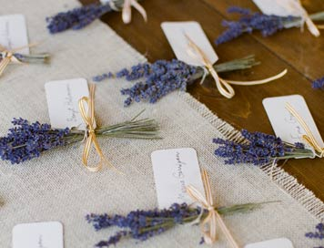
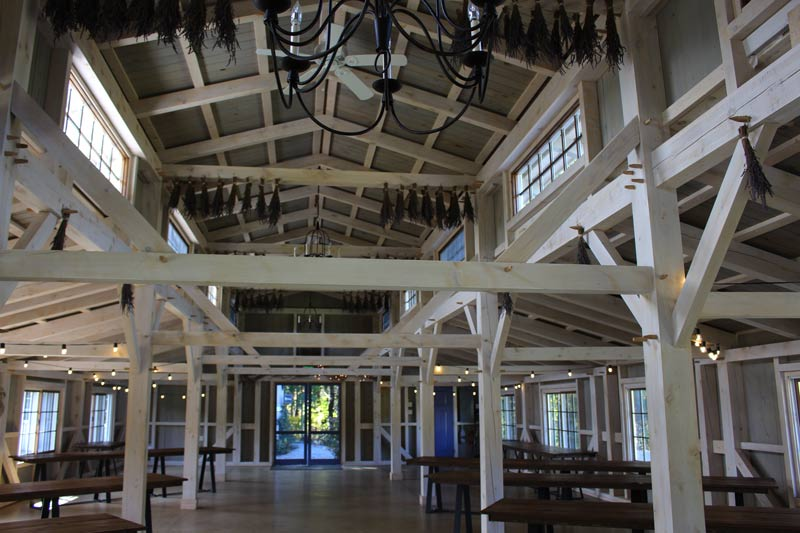

WHERE?
The ceremony and reception will both be held at Marianmade Farm, in lovely Wiscasset Maine.
WHEN?
Both the ceremony and reception will be held at Marianmade Farm in Wiscasset, Maine. Billy and I went to visit this fall, and we took many photos of the farm. You can find those here, but you can also check out their website for more information.
This is Marianmade Farm, a lovely place on the Maine coast.
Marianmade Farm is a working lavender farm.
Marianmade farm is a working lavender farm on the coast, surrounded by beautiful pine trees. We fell in love with it, and we hope you will too! The flowers for our wedding will be grown on-site, by the ever-so-talented Michelle Peele. Weather permitting, we will be having the ceremony outside, overlooking the bay. The reception will be in the beautiful barn, pictured below.
There are TONS of fun places to visit on the Maine coast during your stay. The town of Wiscasset is quaint and sweet, and the neighboring city of Boothebay Harbor is well-known in Maine as a tourist destination. Please see Guest Information for more information.
WHY WE CHOSE MAINE FOR THE WEDDING
Kaila Says:
Traditionally, the wedding is supposed to be in the bride's hometown, but since I'm from California that would have been pretty complicated for Billy's family. We wanted to find somewhere that would work for both families, but didn't feel like a compromise. I felt most tied to the Oregon area, where some of my family live currently, but I also adore the Maine coast. After living there last summer, I fell in love. When Billy and I decided we would be moving there next summer, it only made sense to get married there as well. It's truly a special place, and we are hoping that all our guests will take our wedding as an opportunity to vacation and relax, as well as have fun and experience the area!
Billy says
Kaila and I fell in love with the Maine coast the summer leading up to our engagement. It is a beautiful place that brings out the best of New England nature that Kaila and I enjoy so much.
WHY WE CHOSE MARIANMADE FOR THE WEDDING
Kaila Says:
Marianmade is pristine and truly lovely. We wanted somewhere that would be outdoors and naturally beautiful, but also classy. We loved the pine trees and the Maine coast. I really don't think we could have found a better place.
Billy says
From when I first saw Marianmade Farm on a blog post I immediately thought that the barn and bay were picturesque. It was an elegant setting with picturesque photo potential. Marianmade speaks to who Kaila and I are. The farm brings you into nature. There are large pines surrounding the property and the water near by provides a fresh Maine breeze. Honestly, I can't think of a negative for Marianmade farm. Everything about it was and is breathtaking.